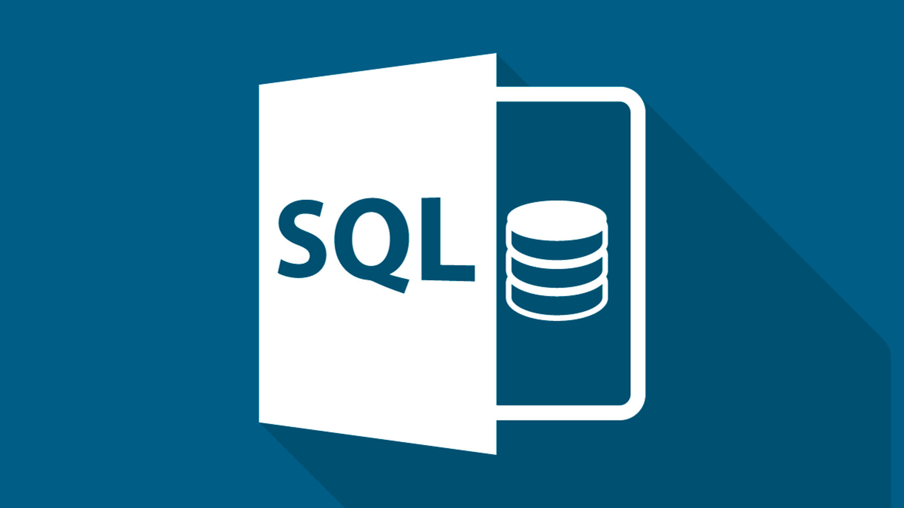
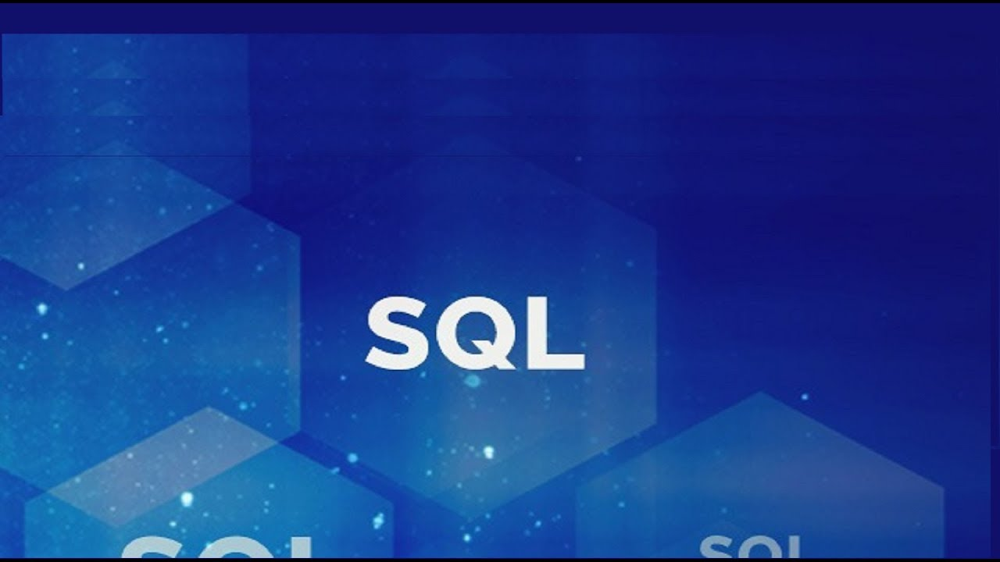
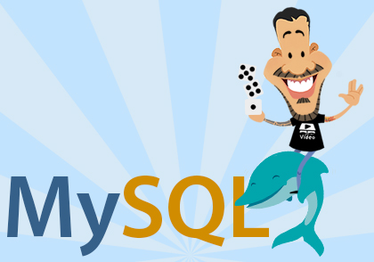

Introdução
A linguagem SQL é o recurso mais conhecido por DBAs e programadores para a execução de comandos em bancos de dados relacionais. É por meio dela que criamos tabelas, colunas, índices, atribuímos permissões a usuários, bem como realizamos consultas a dados. Enfim, é utilizando a SQL que “conversamos” com o banco de dados. Essa breve descrição já deixa clara a importância da compreensão e domínio sobre tal recurso. Saiba, também, que ela facilita não apenas a execução de tarefas em SGBDs, mas também o diálogo entre profissionais de banco de dados e programadores. Com base nisso, aprender sobre SQL, a Structured Query Language, passa a ser fundamental para qualquer um que deseja atuar nessas áreas.Primeiros passos
Após conhecer a SQL é natural nos interessarmos por vê-la na prática, executar os primeiros comandos, as primeiras consultas (queries), mesmo em um banco de dados de exemplo fornecido pelo Sistema Gerenciador de Banco de dados. Mas, por onde começar exatamente? Onde executar esses comandos? Para responder a essas questões, configurar o ambiente, criar a primeira tabela, inserir dados, assim como executar algumas consultas, preparamos o curso da DEVMEDIA: <--- Clique aqui para acessar o curso
Organização da SQL
No curso acima você deve ter notado que a linguagem SQL é organizada em subconjuntos, cada um com propósitos bem definidos (Figura 1):DQL - Linguagem de Consulta de Dados - Define o comando utilizado para que possamos consultar (SELECT) os dados armazenados no banco;
DML - Linguagem de Manipulação de Dados - Define os comandos utilizados para manipulação de dados no banco (INSERT, UPDATE e DELETE);
DDL - Linguagem de Definição de Dados - Define os comandos utilizados para criação (CREATE) de tabelas, views, índices, atualização dessas estruturas (ALTER), assim como a remoção (DROP);
DCL - Linguagem de Controle de Dados - Define os comandos utilizados para controlar o acesso aos dados do banco, adicionando (GRANT) e removendo (REVOKE) permissões de acesso;
DTL - Linguagem de Transação de Dados - Define os comandos utilizados para gerenciar as transações executadas no banco de dados, como iniciar (BEGIN) uma transação, confirmá-la (COMMIT) ou desfazê-la (ROLLBACK).

figura(1)
A partir deste ponto, tomaremos essa subdivisão da SQL para organizar o guia.
SQL DQL - Data Query Language
Como você já pôde notar e irá verificar ao longo da sua carreira, uma das tarefas mais corriqueiras em bancos de dados é a execução de queries. Portanto, saber criá-las da melhor maneira é muito importante para o desempenho do banco e de aplicações que dele dependam. Neste momento, de primeiros passos, você não precisa se preocupar tanto com isso, mas recomendamos que pense sobre esse assunto a cada novo recurso relacionado a consultas que estudar.O curso abaixo lhe ensinará a criar consultas em SQL, a utilizar o comando SELECT. Conheceremos, assim, alguns dos principais recursos, por exemplo: ordenação de registros, funções de agregação, junções, entre outros.
<--- Introdução basica
 <--- Introdução avançada
Quer aprender mais sobre BANCO DE DADOS ?
Se inscreva para as aulas do CURSO EM VIDEO CLIQUE AQUI <--- Clique aqui para acessar o curso